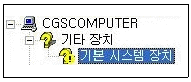
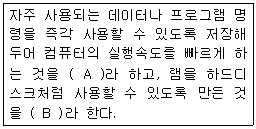
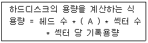

PC정비사-2급 (2011-07-24 기출문제)
1과목: PC유지보수
1. PC 조립 시 연결하지 않으면 시스템이 멈추는 증상 등의 치명적인 문제를 발생시킬 수 있는 것은?
- HDD LED 커넥터
- Power LED 커넥터
- CPU 쿨러 커넥터
- CD-ROM 사운드 케이블
(정답률: 87%)

2. 컴퓨터에 주변기기를 추가할 때 별도의 설정을 하지 않아도 설치만 하면 그대로 사용할 수 있도록 하는 기능은?
- P2P(Peer to Peer)
- PnP(Plug and Play)
- CMOS
- POST(Power-on Self Test)
(정답률: 89%)
3. Windows XP의 최적화에 대해 설명한 것 중 잘못된 것은?
- Windows를 사용할수록 부팅 속도가 느려지는 원인은 하드디스크 단편화와 레지스트리 단편화가 가장 큰 원인이다.
- Windows 부팅 속도를 느리게 만드는 원인 중 하나는 '시작 프로그램' 이 많기 때문이다.
- 루트 폴더에 파일이 많으면 부팅 속도가 느려진다.
- Windows XP는 프리페치(Prefetch) 파일을 만드는데 이 파일이 많을수록 좋다.
(정답률: 83%)
4. 메인보드의 기본적인 하드디스크 연결 포트 외에 USB나 기타 하드디스크를 장착할 수 있는 장치를 사용하지 않을때 P-ATA 포트 2개와 S-ATA 포트 4개를 지원하는 메인보드에 연결할 수 있는 HDD의 최대 개수는?
- 5개
- 6개
- 8개
- 10개
(정답률: 76%)
5. 아날로그 비디오 신호를 받고 보낼 수 있는 그래픽 카드에 붙이는 이름은?
- MPEG
- VIVO
- DVI
- CRT
(정답률: 66%)
6. Windows XP가 설치된 하드디스크로 부팅하여 사용 중이던 컴퓨터가 갑자기 부팅이 되지 않을 경우의 조치로 잘못된 것은?
- 키보드, 마우스 연결 확인
- 바이러스 감염 여부 확인
- 시스템 파일의 손상 여부 확인
- CMOS의 설정 확인
(정답률: 88%)
7. Award BIOS의 CMOS 설정 메뉴 중 ‘STANDARD CMOS SETUP’ 에서 설정할 수 없는 것은?
- 컴퓨터 내부 날짜와 시간 설정
- 메모리 스피드 설정
- 하드디스크 타입 설정
- 플로피디스크 드라이브 타입 설정
(정답률: 67%)
8. 컴퓨터용 휴즈에 대한 설명 중 잘못된 것은?
- 유리로 된 2~3cm의 원통형 휴즈를 사용한다.
- 휴즈는 전원공급기 외부에서 쉽게 교체할 수 있게 구성되어 있다.
- 분해 시, 감전의 위험이 있으므로 전기선을 콘센트에서 분리해 작업하는 것이 좋다.
- 휴즈는 사용전압과 전류에 맞는 것을 사용해야 한다.
(정답률: 79%)
9. win.ini, system.ini 파일에서 실행시킨 장치 드라이버나 램 상주 프로그램, Windows의 시작 프로그램에 문제가 있는지 점검하기 위해 시스템 구성 유틸리티를 실행하는 명령어는?
- autoexec.bat
- config.sys
- msconfig.exe
- ipconfig.exe
(정답률: 80%)
10. BIOS 설정 값이 저장되는 장소는?
- CPU
- ODD
- CMOS
- HDD
(정답률: 86%)
11. Windows 의 파티션 관리 프로그램 FDISK로 할 수 없는 작업은?
- 분할 영역 생성 및 삭제
- 분할 영역에 관한 정보 열람
- 클러스터 크기 변경
- 분할 영역 활성화
(정답률: 77%)
12. 시스템 등록정보의 장치 관리자에 나타난 ‘노란색 물음표’의 의미는?

- 이동식 저장장치 한계 용량 경고
- 자원 충돌
- 드라이버 미설치
- 하드웨어 고장
(정답률: 91%)
13. 바이오스를 업그레이드 했을 때 얻을 수 있는 장점이 아닌 것은?
- 큰 용량의 하드디스크를 지원할 수 있다.
- 좀 더 높은 사양의 CPU를 사용할 수 있다.
- 모든 종류의 램을 사용할 수 있다.
- 기존의 문제를 해결하여 안정적인 환경을 만들 수 있다.
(정답률: 84%)
14. 컴퓨터를 사용하는 도중 모니터 화면이 일그러져 나오거나 일부 색이 표시가 되지 않는 등, 정상적으로 나오지 않을 때 점검해야 될 부분으로 잘못된 것은?
- 모니터 데이터 케이블의 연결 상태를 확인한다.
- BIOS 설정의 모니터 항목을 확인한다.
- 그래픽카드의 이상 유무를 확인한다.
- 모니터의 이상 유무를 확인한다.
(정답률: 74%)
15. PC의 이상 현상과 그 현상의 원인이나 대책으로 잘못된 것은?
- 모니터에 아무 것도 나오지 않는다. - VGA 카드와 모니터간의 연결 케이블을 점검해본다.
- 하드디스크에 배드 섹터가 생겼다. - 하드디스크 동작 중 충격을 주면 배드 섹터의 원인이 될 수 있다.
- 사운드 카드에서 소리가 나지 않는다. - 타 카드와 IRQ 충돌 등으로 인한 작동 불량일 수 있다.
- Windows XP에서 ALT 키를 누르면 한/영 전환이 된다. - 키보드와 본체와의 연결 상태를 점검해 본다.
(정답률: 79%)
2과목: PC운영체제
16. Windows XP의 기본 내장 프로그램으로 Windows에 발생할 수 있는 장애를 빠르게 극복하기 위하여 미리 준비해 둔 이전의 시스템 상태로 되돌리는 기능은?
- 시스템 복원
- Norton Ghost 15
- 하드디스크 정리
- 자동 업데이트
(정답률: 93%)
17. Windows XP 에서 고급 옵션 메뉴를 표시하려고 할 때, 부팅 시 눌러야 하는 키는?
- F6
- F7
- F8
- F9
(정답률: 85%)
18. 레지스트리의 루트에 있는 루트 키 중에 로그온 중인 사용자에 대한 정보를 담고 있는 것은?
- HKEY_CURRENT_USER
- HKEY_CLASSES_ROOT
- HKEY_LOCAL_MACHINE
- HKEY_CURRENT_CONFIG
(정답률: 77%)
19. 영문자 한 글자를 나타낼 수 있는 최소 단위는?
- bit
- Byte
- KByte
- MByte
(정답률: 72%)
20. 외부 코덱이 설치되지 않은 상태의 Windows Media Player 10 에서 재생할 수 없는 미디어 파일은?
- mkv
- mp3
- asf
- avi
(정답률: 70%)
21. Windows XP에서 ‘웹서버와 HTTP 프로토콜을 통신하여 사용자가 요구한 홈페이지에 접근하여 웹 문서를 사용자에게 보여주는 프로그램’ 을 무엇이라고 하는가?
- 웹 브라우저
- 이더넷 통신
- FTP
- TELNET
(정답률: 85%)
22. 분산 처리 시스템에 관한 설명으로 올바른 것은?
- 처리할 자료가 일정량이 될 때까지 모아서 한꺼번에 처리한다.
- 중앙 처리 장치 사용 기간을 돌아가면서 할당 받는다.
- 작업을 정의된 시간 안에 반드시 처리해야 하는 시스템에 적합하다.
- 여러 개의 분산된 데이터 저장장소와 처리기들을, 네트워크로 연결하여 서로 통신을 하면서 동시에 일을 처리한다.
(정답률: 82%)
23. Windows XP에서 프로세스의 CPU 및 메모리 사용 용량이나 PC의 전체적인 리소스를 확인하고 싶을 때 사용하는 항목은?
- 작업관리자
- 네트워크
- 디스플레이
- 멀티미디어
(정답률: 88%)
24. Windows XP의 Home Edition에서 지원하지 않는 것은?
- FAT32 파일 시스템
- 빠른 사용자 전환
- 파일의 암호화
- PPPoE 지원
(정답률: 51%)
25. GUI 방식에 대한 설명 중 올바른 것은?
- 맥 OS 에서는 X Window System 을 통해 구현하고 있다.
- GUI형 웹 브라우저의 개발은 인터넷의 대중화에 기여했다.
- Windows 기반의 운영체제에서만 지원하며 Linux에서는 사용할 수 없다.
- 사용자 중심적 도스쉘 인터페이스를 제공한다.
(정답률: 73%)
26. Windows XP에서 숨은 공유(Hidden Share)의 폴더 이름으로 올바른 것은?
- INSTALL@
- INSTALL#
- INSTALL$
- INSTALL&
(정답률: 84%)
27. Windows XP의 SFC(시스템 파일 검사기)에 대한 설명으로 잘못된 것은?
- 보호된 모든 시스템 파일을 검색하며 잘못된 버전을 올바른 버전으로 복원한다.
- Windows XP의 제한된 계정은 이 명령을 사용할 수 없다.
- /SCANNOW 옵션을 붙이면 시스템 파일을 즉시 검사한다.
- /SCANBOOT 옵션을 붙이면 자동으로 재부팅을 하면서 시스템 파일을 검사한다.
(정답률: 46%)
28. 텔레비전이나 사진 전송 또는 화상 신호를 컴퓨터에 입력할 때, 화상을 분해하는 최소의 점 즉, 공간적인 화상의 구성 요소로 그 수가 많을수록 화상의 해상도가 좋은 것을 뜻하는 단위는?
- Bit
- Byte
- Word
- Pixel
(정답률: 80%)
29. Windows XP에서 공유자원 관리에 대한 설명으로 잘못된 것은?
- 사용자 계정을 기반으로 공유된 자원의 관리가 가능하다.
- 공유자원 관리를 종합적으로 관리 할 수 있는 도구가 컴퓨터 관리의 공유 폴더이다.
- 공유 폴더의 등록정보에서는 현재 공유 설정된 폴더의 종류, 위치, 크기, 만든 날짜를 확인할 수 있다.
- 세션이나 열린 파일은 현재 해당 공유자원을 사용하는 컴퓨터나 사용에 대한 정보를 확인할 수 없다.
(정답률: 75%)
30. Windows XP에서 레지스트리가 저장되는 기본 폴더로 올바른 것은?
- C:\WINDOWS\system32\config
- C:\WINDOWS\system32\registry
- C:\WINDOWS\system32\setup
- C:\WINDOWS\system\common
(정답률: 51%)
3과목: PC주변기기
31. 전원공급이 없어도 내용이 보존되고 고쳐 쓰기가 가능하며, 소형화가 쉬워서 휴대용 기기의 저장 매체로 활용되는 것은?
- DRAM
- Flash Memory
- SRAM
- SDRAM
(정답률: 78%)
32. DVD Video에서 사용되는 영상데이터 압축 표준은?
- AVI
- MPEG-1
- MPEG-2
- AC'97
(정답률: 62%)
33. 인텔 코어i3-2세대 2100 CPU의 특징으로 잘못된 것은?
- 샌디브릿지 아키텍처가 적용되였다.
- 32bit의 Windows XP 운영체제에선 사용할 수 없다.
- DDR3-SDRAM을 사용한다.
- 인텔 그래픽스 HD2000 그래픽 코어를 내장하고 있다.
(정답률: 77%)
34. 로우 레벨 포맷(Low Level Format)에 대한 설명으로 올바른 것은?
- 하드디스크의 물리/논리적인 배드 섹터를 치료할 수 있다.
- 디스크의 부트 섹터만 초기화 하는 빠른 포맷 방법이다.
- 섹터 하나 하나를 초기화하는 작업이다.
- 매달 주기적으로 해주는 것을 권장한다.
(정답률: 69%)
35. A, B에 들어갈 용어로 올바른 것은?

- A - CMOS 메모리, B - 캐시 메모리
- A - 캐시 메모리, B - 가상 메모리
- A - 캐시 메모리, B - 램 디스크
- A - 가상 메모리, B - 램 디스크
(정답률: 70%)
36. 외장형 저장장치의 인터페이스가 아닌 것은?
- IEEE1394
- USB1.1
- PS/2
- USB2.0
(정답률: 66%)
37. 하드디스크의 용량을 계산하는 식 중 ( A )안에 들어갈 단어는?

- 클러스터 수
- 블록(Block) 수
- 섹터 인터리브 수
- 실린더 수
(정답률: 68%)
38. TFT LCD 모니터에 대한 설명으로 잘못된 것은?
- 반응속도와 시야각은 사용된 패널의 종류와 밀접한 연관이 있다.
- 같은 크기의 CRT 모니터보다 전기 소모량이 많다.
- CRT 모니터보다 전자파를 적게 방출한다.
- 응답 속도가 빠를수록 잔상이 줄어든다.
(정답률: 70%)
39. 외부 음원을 이용하여 풍부하고 다양한 음을 제공할 수 있는 음원 방식은?
- FM
- PCM
- AM
- Wave Table
(정답률: 57%)
40. 개인용 컴퓨터에는 여러 종류의 저장 장치가 사용된다. 다음 저장 장치 중에서 자성 물질을 이용하지 않는 것은?
- Floppy Disk
- Hard Disk
- Blu-ray Disc
- Magnetic Tape
(정답률: 78%)
41. Notebook PC에서 NTSC 또는 PAL방식의 TV에 연결하여 비디오 화면을 표시할 수 있는 포트는?
- IrDA
- USB
- PCMCIA
- S-Video
(정답률: 65%)
42. 네트워크 어댑터에서 부트롬이 장착된 것이 있다. 이 부트롬에 들어 있는 것은 원격 부트 서버를 자동으로 검색하여 네트워크 환경을 설정하고 부팅에 필요한 시스템 파일을 가져온다. 이런 기능을 수행하는 코드는?
- Boot 코드
- Remote Boot 코드
- PXE 코드
- Remote Access 코드
(정답률: 40%)
43. 최근 들어 하드디스크 스핀들 모터의 회전수는 마치 하드디스크 성능을 의미하듯 사용되는 용어이다. 다음 중 스핀들 모터 회전수로 사용되는 단위는?
- RPM
- APM
- PPM
- BPS
(정답률: 82%)
44. 주기억 장치와 CPU 사이의 속도 차이를 조정하기 위하여 사용되는 기억 장치는?
- DRAM
- Flash ROM
- CACHE
- EEPROM
(정답률: 76%)
45. 네트워크를 구축하기 위한 하드웨어로 볼 수 없는 것은?
- LAN Card
- Router
- UTP Cable
- TCP/IP
(정답률: 71%)
4과목: PC네트워크
46. 인터넷 전용선의 종류와 속도를 알맞게 짝지은 것은?
- T1 - 6Mbps
- T2 - 64/128Kbps
- T3 - 45Mbps
- E1 - 1.544Mbps
(정답률: 60%)
47. 허브의 종류와 해당 설명으로 올바른 것은?
- 스위칭 허브 - 사용자가 많아도 각각의 포트가 네트워크 속도를 유지할 수 있다.
- 더미 허브 - 사용자의 수가 늘면 전송 속도가 증가한다.
- 패스트 이더넷용 허브 - 전송 속도는 1Gbps이다.
- 인텔리전트 허브 - NMS를 통한 관리기능은 지원되지 않는다.
(정답률: 72%)
48. 유동 IP와 고정 IP에 대한 설명으로 잘못된 것은?
- VDSL이나 케이블 모뎀을 사용하는 초고속 인터넷 환경에서는 기본적으로 유동 IP가 부여된다.
- 유동 IP는 DHCP 방식에 의해 제공된다.
- 고정 IP는 웹서버 IP 주소로 사용할 수 없다.
- 유동 IP에서도 VPN 장비를 연결하면 사설 네트워크를 구성할 수 있다.
(정답률: 75%)
49. 웹 브라우저, 웹 서버 간에 데이터를 안전하게 교환하기 위한 프로토콜로서 웹 제품 뿐 아니라 FTP나 텔넷 등 다른 TCP/IP 애플리케이션에 적용할 수 있는 보안기술은?
- SET(Secure Electronic Transaction)
- SSL(Secure Sockets Layer)
- S/MIME(Secure Multi-Purpose Internet Mail Extensions)
- PGP(Pretty Good Privacy)
(정답률: 66%)
50. 라우터에 대한 설명으로 잘못된 것은?
- 동일한 전송 프로토콜을 사용하는 분리된 네트워크를 연결하는 장치이다.
- 인터넷에서 각 네트워크를 연결시켜 주는 장비이다.
- 라우팅 테이블을 이용하여 접속 경로를 설정한다.
- 경로를 선택할 때 연결이 비효율적인 경로를 선택하여 패킷을 보낸다.
(정답률: 76%)